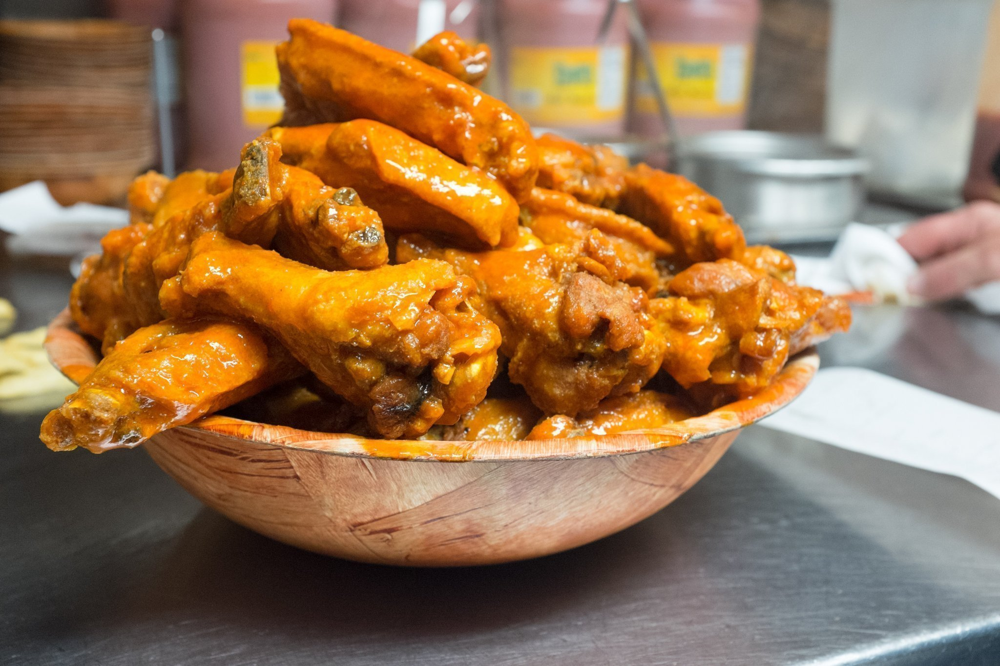
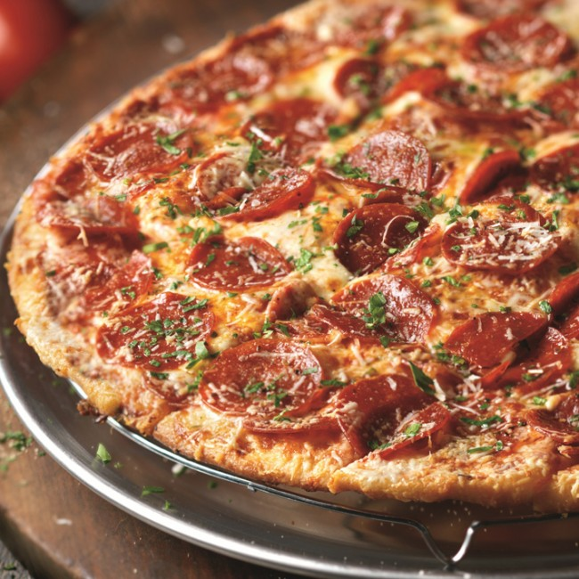
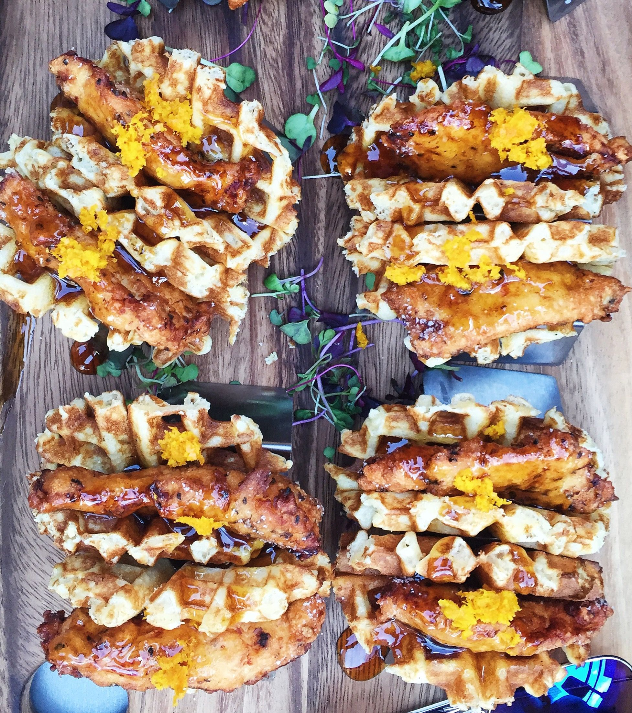
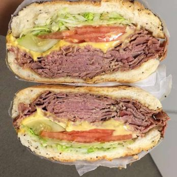
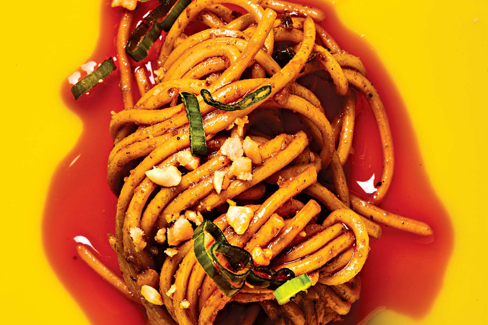

Wings
Published on August 4, 2017
In a city of never-ending menus and food trends, it can be hard to figure out the next best brunch spot, lunchtime haunt, or recipe to master. However, all those hours you spend sifting through the world of Instagram can actually result in more than just ogling of some serious #foodporn. In fact, it may be the best way to uncover new foodie finds. There's no doubt we're always looking to expand our palette and our ideas. And sometimes, the most interesting part of discovering the next best food shots are the stories behind the 'gram: While some folks dedicate their entire lives to the culinary craft, others simply have a passion for anything involving a kitchen, or put their focus into a photo project to move past a breakup. So, among upscale brunch bites and savory street food, these professional queens (and two kings) of Instagram are making your mouths water — all while telling a personal story.

Pizza
Published on April 4, 2015
In a city of never-ending menus and food trends, it can be hard to figure out the next best brunch spot, lunchtime haunt, or recipe to master. However, all those hours you spend sifting through the world of Instagram can actually result in more than just ogling of some serious #foodporn. In fact, it may be the best way to uncover new foodie finds. There's no doubt we're always looking to expand our palette and our ideas. And sometimes, the most interesting part of discovering the next best food shots are the stories behind the 'gram: While some folks dedicate their entire lives to the culinary craft, others simply have a passion for anything involving a kitchen, or put their focus into a photo project to move past a breakup. So, among upscale brunch bites and savory street food, these professional queens (and two kings) of Instagram are making your mouths water — all while telling a personal story.

Chicken & Waffles
Published on January 4, 2013
In a city of never-ending menus and food trends, it can be hard to figure out the next best brunch spot, lunchtime haunt, or recipe to master. However, all those hours you spend sifting through the world of Instagram can actually result in more than just ogling of some serious #foodporn. In fact, it may be the best way to uncover new foodie finds. There's no doubt we're always looking to expand our palette and our ideas. And sometimes, the most interesting part of discovering the next best food shots are the stories behind the 'gram: While some folks dedicate their entire lives to the culinary craft, others simply have a passion for anything involving a kitchen, or put their focus into a photo project to move past a breakup. So, among upscale brunch bites and savory street food, these professional queens (and two kings) of Instagram are making your mouths water — all while telling a personal story.

Sandwich
Published on December 4, 2017
In a city of never-ending menus and food trends, it can be hard to figure out the next best brunch spot, lunchtime haunt, or recipe to master. However, all those hours you spend sifting through the world of Instagram can actually result in more than just ogling of some serious #foodporn. In fact, it may be the best way to uncover new foodie finds. There's no doubt we're always looking to expand our palette and our ideas. And sometimes, the most interesting part of discovering the next best food shots are the stories behind the 'gram: While some folks dedicate their entire lives to the culinary craft, others simply have a passion for anything involving a kitchen, or put their focus into a photo project to move past a breakup. So, among upscale brunch bites and savory street food, these professional queens (and two kings) of Instagram are making your mouths water — all while telling a personal story.

Macaroons
Published on July 4, 2010
In a city of never-ending menus and food trends, it can be hard to figure out the next best brunch spot, lunchtime haunt, or recipe to master. However, all those hours you spend sifting through the world of Instagram can actually result in more than just ogling of some serious #foodporn. In fact, it may be the best way to uncover new foodie finds. There's no doubt we're always looking to expand our palette and our ideas. And sometimes, the most interesting part of discovering the next best food shots are the stories behind the 'gram: While some folks dedicate their entire lives to the culinary craft, others simply have a passion for anything involving a kitchen, or put their focus into a photo project to move past a breakup. So, among upscale brunch bites and savory street food, these professional queens (and two kings) of Instagram are making your mouths water — all while telling a personal story.

Noodles
Published on September 10, 2009
In a city of never-ending menus and food trends, it can be hard to figure out the next best brunch spot, lunchtime haunt, or recipe to master. However, all those hours you spend sifting through the world of Instagram can actually result in more than just ogling of some serious #foodporn. In fact, it may be the best way to uncover new foodie finds.
There's no doubt we're always looking to expand our palette and our ideas. And sometimes, the most interesting part of discovering the next best food shots are the stories behind the 'gram: While some folks dedicate their entire lives to the culinary craft, others simply have a passion for anything involving a kitchen, or put their focus into a photo project to move past a breakup. So, among upscale brunch bites and savory street food, these professional queens (and two kings) of Instagram are making your mouths water — all while telling a personal story.